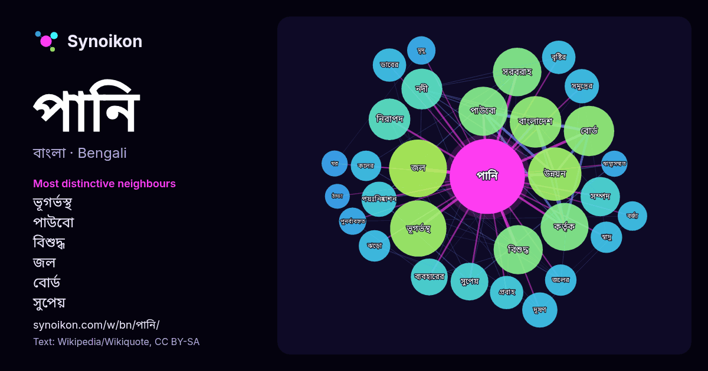

বাংলা · জনপ্রিয় শব্দ
পানি
“water” · উইকিপিডিয়া, Wikiquote থেকে 1239টি প্রয়োগে এর চারপাশে পাওয়া শব্দ।

সবচেয়ে স্বতন্ত্র প্রতিবেশী
- ভূগর্ভস্থ 42×
- পাউবো 35×
- বিশুদ্ধ 32×
- জল 30×
- বোর্ড 29×
- সুপেয় 23×
- নিরাপদ 22×
- উন্নয়ন 22×
- পয়ঃনিষ্কাশন 20×
- সরবরাহ 19×
- দূষণ 19×
- ডাবের 18×
- সম্পদ 17×
- ঝড়ো 16×
- বৃষ্টির 16×
- স্বাদু 16×
- কলের 15×
- সমুদ্রের 15×
- প্রবাহ 14×
- মৃদু 13×
× = সাধারণ উইকিপিডিয়া টেক্সটের চেয়ে কত গুণ বেশি।
সবচেয়ে ঘন ঘন প্রতিবেশী
- জল 54
- ভূগর্ভস্থ 51
- উন্নয়ন 46
- বাংলাদেশ 43
- বোর্ড 41
- পাউবো 39
- বিশুদ্ধ 39
- সরবরাহ 38
- কর্তৃক 37
- নিরাপদ 28
- নদী 27
- সম্পদ 25
- নদীর 24
- সুপেয় 23
- ব্যবহারের 22
- দূষণ 20
- পয়ঃনিষ্কাশন 20
- সমুদ্রের 19
- ডাবের 18
- প্রবাহ 18
প্রসঙ্গে
- সংস্কৃত ধাতু √ পণ্ + ই = পাণি থেকে এসেছে। অপরদিকে "পানি" শব্দটি এসেছে সংস্কৃত ধাতু √ পানি্ + অ = পানি থেকে। "জল" শব্দটি এসেছে সংস্কৃত ধাতু √ জল্ + অ = Wikipedia snippets · পানি
- তৃষ্ণা নিবারণের উদ্দেশ্যে যে পানি পান করে, তা-ই স্বাদু পানি নামে পরিচিত। সাগর, মহাসাগরের পানিতে প্রচুর লবণাক্ততা রয়েছে এবং ঐ পানি পান করার উপযোগী নয়। তবে Wikipedia snippets · স্বাদু পানি
- মহাসড়কের পশ্চিম পাশে বিশ্বের অষ্টম ও দক্ষিণ এশিয়ার প্রথম পানি জাদুঘরটির উদ্বোধন করা হয়। পানি জাদুঘরে প্রবেশ পথের সম্মুখেই রয়েছে নদীতে বাঁধ তৈরির ফলে Wikipedia snippets · পানি জাদুঘর
- পানির শোধন ও বৃষ্টির পানি সংগ্রহ। ২০০০ থেকে ২০১০ সালের মধ্যে বাংলাদেশের আর্সেনিক দূষণের শিকার অঞ্চলগুলিতে সরকার ঐসব নিরাপদ পানি সংগ্রহ প্রযুক্তি স্থাপন Wikipedia snippets · বাংলাদেশের পানি সরবরাহ ও পয়ঃনিষ্কাশন
- কাজের জন্য বিশুদ্ধ জল বা পানি উৎপাদন করা। অধিকাংশ পানিকে মানুষের ব্যবহারের (পান করার পানি) জন্য বিশুদ্ধ করতে হয়, কিন্তু পানি বিশুদ্ধকরণ প্রক্রিয়াটি মেডিকেল Wikipedia snippets · পানি বিশুদ্ধকরণ
- বাংলাদেশ পানি উন্নয়ন বোর্ড (পাউবো) বাংলাদেশের একটি বিশেষায়িত সংস্থা। এটি একটি সরকারি সংস্থা যা বাংলাদেশের ভূ-পৃষ্ঠের পানি এবং ভূগর্ভস্থ পানি সুষ্ঠ পরিচালনার Wikipedia snippets · বাংলাদেশ পানি উন্নয়ন বোর্ড
- ফ্লোরাইডেশন এর মাধ্যমে পানিকে জীবাণু মুক্ত করা হয়। পরিশোধিত পানি তারপর মাধ্যাকর্ষণ দ্বারা প্রবাহিত বা পাম্প করে জলাশয়, পানি মিনার গুলিতে অথবা মাটিতে Wikipedia snippets · পানি সরবরাহ
- চট্টগ্রাম পানি সরবরাহ ও পয়ঃনিষ্কাশন কর্তৃপক্ষ সংক্ষেপে চট্টগ্রাম ওয়াসা বাংলাদেশের চট্টগ্রাম জেলায় অবস্থিত পল্লী উন্নয়ন ও সমবায় বিভাগের অধীনে একটি Wikipedia snippets · চট্টগ্রাম পানি সরবরাহ ও পয়ঃনিষ্কাশন কর্তৃপক্ষ
আরও শব্দ
- অরণ্য
- আয়না
- ইতিহাস
- ঈশ্বর
- কাজ
- কুকুর
- ক্ষমতা
- খাদ্য
- গান
- গ্রীষ্ম
- ঘড়ি
- ঘণ্টা
- ঘোড়া
- ছায়া
- জননী
- জলবায়ু
- জীবন
- ঝড়
- টাকা
- ট্রেন
- দারুচিনি
- দ্বীপ
- নক্ষত্র
- নীরবতা
- পরিবার
- পাহাড়
- প্রকৃতি
- বাগান
- বিজ্ঞান
- বিড়াল
- বৃষ্টি
- ভাষা
- মধু
- মরুভূমি
- মানচিত্র
- মৃত্যু
- রাস্তা
- রুটি
- লবণ
- শরৎ
- শহর
- শিল্প
- শীত
- সত্য
- সময়
- সেতু
- সোনা
- স্বাস্থ্য
- হৃদয়
2026-10-09 তারিখে ডিফল্ট সেটিংসে (±5 শব্দ, মাঝারি কর্পাস) আগে থেকে গণনা করা। ইন্টারঅ্যাক্টিভ মানচিত্র লাইভ ডেটা দিয়ে এটি হালনাগাদ করতে পারে।
যন্ত্রে অনূদিত ইন্টারফেস; সংশোধন স্বাগত।